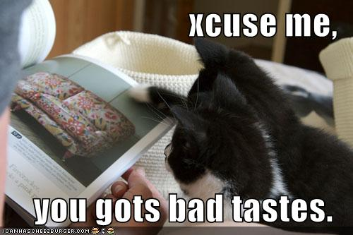
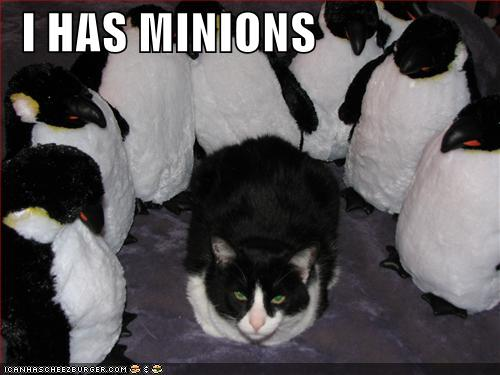

Exploring Erlang
| Author: | Bob Ippolito |
|---|---|
| Date: | August 2007 |
| Venue: | C4[1] |
What's Erlang?
- Functional
- Process-oriented
- Scalable
- Distributed
- Highly reliable
Erlang at Mochi Media
MochiAds, MochiBot
- High-performance HTTP servers
- Ad targeting
- Real-time analytics
- Lots of internal use
Maybe you've seen our ads?
Functional
- No mutable data structures
- Lots of linked lists
- All state is on the stack
- Accumulators
- Tail-calls
- Pattern matching
Collections
- list:
- linked list: [1, 2, 3] = [1 | [2, 3]]
- tuple:
- {fixed_size, array, of, stuff}
Basic Types
- atom:
- effectively a constant string, also seen 'quoted'
- binary:
- <<"contiguous chunk of bytes", 9999:64/little>>
- integer, float:
- unbounded integers, 64-bit floating point
- ref:
- unique reference
Other Erlang Data Types
- fun:
- function reference, can be sent to other processes or serialized
- pid:
- reference to a process, maybe on another node
- port:
- reference to a driver, socket, pipe, etc. Similar to pid
Not Erlang Types
- boolean:
- true, false (atoms)
- character:
- $c = 99
- string:
- "abc" = [$a, $b, $c] = [97, 98, 99]
Variables
- Variables Start With A Capital Letter
- Single Assignment
- Assignment by pattern match
Simple Pattern Matching
A = some_atom,
B = some_atom,
A = B,
{some_atom, some_atom} = {A, B},
%% _ (underscore) matches anything
{A, _} = {some_atom, has_a_bucket},
%% Next line will fail with a bad match
A = another_atom.
Multiple Clauses, Guards
case date() of
{2007, 8, N} when N >= 10, N =< 12 ->
c4_1;
{2006, 10, N} when N == 20; N == 21 ->
c4_0;
_ ->
not_c4
end.
Bit Syntax
<<Bits:5, _:3, _/binary>> = Binary, Padding = (8 - ((5 + Bits * 4) band 7)), <<Bits:5, 0:Bits, Width:Bits/signed, 0:Bits, Height:Bits/signed, _:Padding, FrameRate:16/little, FrameCount:16/little>> = Binary.
Punctuation?!
- comma ( , ):
- Delimits expressions
- semicolon ( ; ):
- Delimits clauses
- period ( . ):
- Ends the last (or only) clause
Syntax is... different
Integer Accumulator (JS)
function sum(list) {
var acc = 0;
for (var i = 0; i < list.length; i++) {
acc += list[i];
}
return acc;
}
Bad Integer Accumulator
sum([]) ->
0;
sum([N | Rest]) ->
%% Not a tail call.
N + sum(Rest).
Shouldn't do this - use tail calls instead.
Integer Accumulator
sum(L) ->
sum(L, 0).
sum([N | Rest], Acc) ->
sum(Rest, N + Acc);
sum([], Acc) ->
Acc.
Better:
lists:sum(L)
List Accumulator (JS)
function seq(min, max) {
var acc = [];
for (var i = min; i <= max; i++) {
acc.push(i);
}
return acc;
}
List Accumulator
seq(Min, Max) ->
seq(Min, Max, []).
seq(N, Max, Acc) when N =< Max ->
seq(1 + N, Max, [N | Acc]);
seq(_N, _Max, Acc) ->
lists:reverse(Acc).
Better:
lists:seq(Min, Max)
Modules
- Flat namespace
- Explicit export of "public" functions
- Referenced by name (atom)
- Compiled to ".beam" file
- Can be reloaded in a running node
Trivial Module
-module(c4).
-export([hello_world/0]).
%% Call this with c4:hello_world().
hello_world() ->
hello_world.
Compiling from the shell
1> c(c4).
{ok,c4}
2> c4:hello_world().
hello_world
Compile everything
1> make:all([load]). Recompile: c4 up_to_date 2> c4:hello_world(). hello_world
Processes
- Cheap (not an OS process or pthread!)
- Communicate only with async messages
- Selective receive
- Keeps state
Creating a process (Server)
-module(c4_adder). -export([start/0, loop/1, add/2]). start() -> spawn(?MODULE, loop, [0]).
Creating a process (API)
add(N, Pid) ->
Pid ! {{add, N}, self()},
receive
{add_result, Result} ->
{ok, Result}
after
10 ->
{error, timeout}
end.
Creating a process (Guts)
loop(Count) ->
receive
{{add, N}, Sender} ->
Sender ! {add_result, N + Count},
?MODULE:loop(N + Count);
Unknown ->
io:format("UNKNOWN: ~p~n",
[Unknown]),
?MODULE:loop(N + Count)
end.
Creating a process (Example)
1> Adder = c4_adder:start().
<0.35.0>
2> c4_adder:add(10, Adder).
{ok,10}
3> Adder ! unexpected_message.
unexpected_message
UNKNOWN: unexpected_message
4> c4_adder:add(20, Adder).
{ok,30}
Registered Processes
1> register(my_adder, c4_adder:start()).
true
2> whereis(my_adder).
<0.35.0>
3> c4_adder:add(10, my_adder).
{ok,10}
4> exit(whereis(my_adder), kill).
true
Distributed
- Nodes can talk to each other
- If they have a shared secret (cookie)
- Same semantics as local communication
Multiple Nodes

Starting Multiple Nodes
$ erl -name bob@127.0.0.1 -cookie secret
1> register(adder, c4_adder:start()).
true
2> c4_adder:add(10, adder).
{ok,10}
$ erl -name alice@127.0.0.1 -cookie secret
1> c4_adder:add(10, {adder, 'bob@127.0.0.1'}).
{ok,20}
Monitoring Processes
Monitoring Processes (Example)
1> register(my_adder, c4_adder:start()).
true
2> Mon = erlang:monitor(process, my_adder).
#Ref<0.0.0.117>
3> exit(whereis(my_adder), kill).
true
4> receive Msg -> io:format("~p~n", [Msg]) end.
{'DOWN', #Ref<0.0.0.117>, process,
{my_adder, nonode@nohost}, killed}
ok
Linked Processes
- Use spawn_link instead of spawn
- If either process dies, the other exits
- ... but process_flag(trap_exit, true) makes it a message, similar to monitoring
High-reliability
- Typical Erlang programs use the OTP framework
- Designed for telecom
- If something fails, restart it
Supervisors
- OTP-based applications are a tree of supervisors
- Supervisors start, monitor, and restart child processes
- Child processes may also be supervisors
Supervisor Tree (Diagram)
Behaviours
- Other processes are mostly gen_* behaviours
- Behaviours are just a compile-time check for a given callback API
gen_server adder (API)
-module(c4_adder_otp).
-behaviour(gen_server).
-export([start/0, add/2, stop/1]).
-export([init/1, terminate/2,
handle_cast/2, handle_call/3]).
start() ->
gen_server:start_link(?MODULE, 0, []).
add(N, Pid) ->
gen_server:call(Pid, {add, N}).
stop(Pid) -> gen_server:cast(Pid, stop).
gen_server adder (Guts)
init(Count) ->
{ok, Count}.
terminate(_Reason, _Count) ->
ok.
handle_cast(stop, Count) ->
{stop, normal, Count}.
handle_call({add, N}, _From, Count) ->
{reply, N + Count, N + Count}.
gen_server adder (Example)
1> {ok, Adder} = c4_adder_otp:start().
{ok,<0.35.0>}
2> c4_adder_otp:add(10, Adder).
10
3> c4_adder_otp:add(10, Adder).
20
4> c4_adder_otp:stop(Adder).
ok
Demo Time

More Information
- http://undefined.org/c4-1/ (Slides, Code)
- erlang.org
- Programming Erlang (Book)
- trapexit.org (Community)
- cean.process-one.net (Packages)